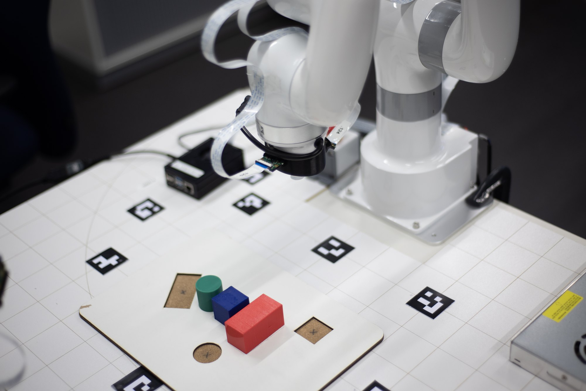
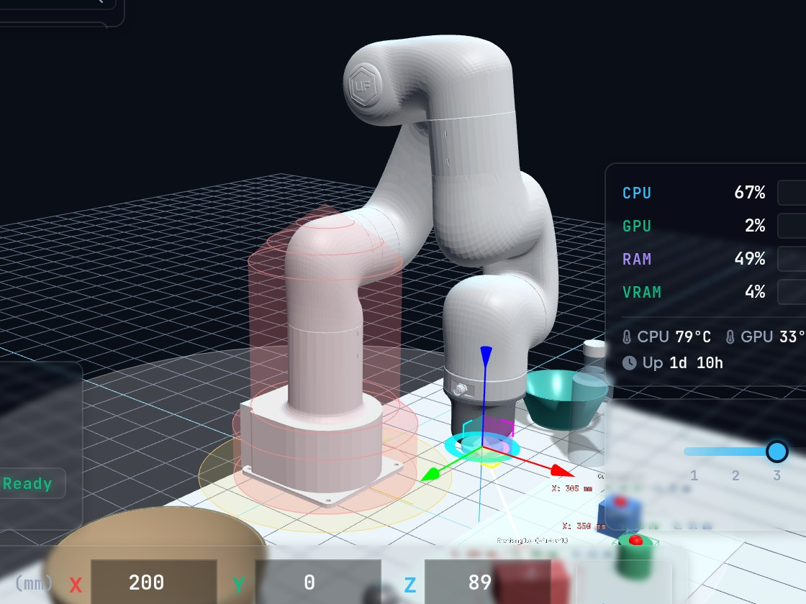
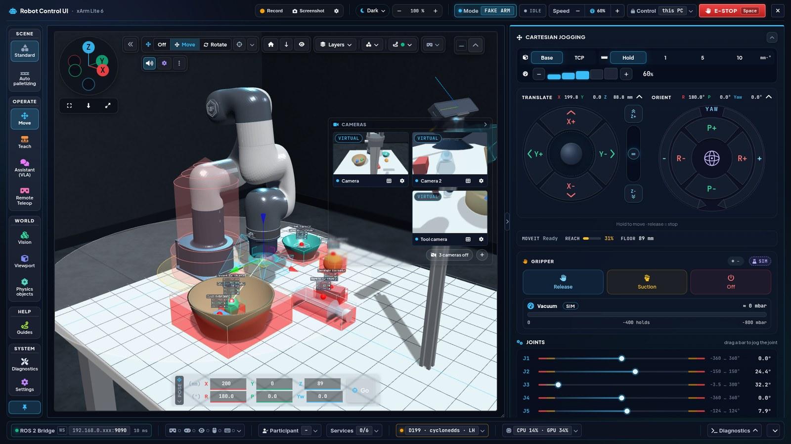
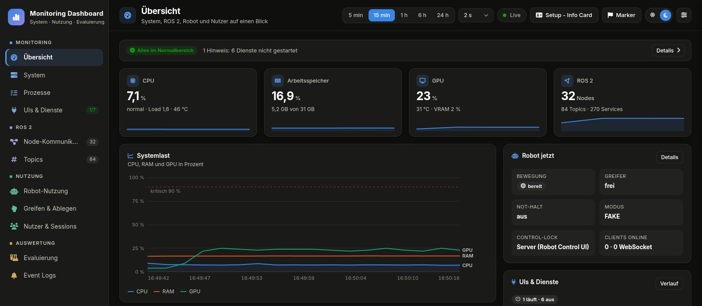

Interakt Control Robot · Hochschule Rhein-Waal · Open Source
Der Mensch führt.Die KI assistiert.
Schauen. Sprechen. Zeigen.Der Arm fährt erst nach Freigabe.
Assistive Robotik-Plattform für den xArm Lite 6 auf Basis von ROS 2 Humble: Das System schlägt vor, der Mensch entscheidet. Jede Person steuert über den Weg, der zu ihr passt, ohne Programmierkenntnisse.
Marius Kaul Betreuung: Prof. Dr. Kai Essig · Hochschule Rhein-Waal · 2026

10 Steuerwege eine Sicherheitskette
1 Satz genügt die KI plant die Schritte
0 Installation Bedienung im Browser
100 % Open Source auf Standard-Hardware
01
Kernmerkmale Acht Merkmale, ein Prinzip: Das System schlägt vor, der Mensch entscheidet.
Digital Twin · Physik Erst virtuell, dann real. Live-3D-Zwilling mit Rapier-Physik-Sandbox.
Virtuelle Objekte Testen ohne Aufbau. Würfel, Flasche, Korb: in MoveIt geprüft.
Kontrolle · Überwachung Alles im Blick. Jederzeit eingreifen. Roboterzustand, ZED, OctoMap, Blackbox live.
Assistive Autonomie Die KI plant. Der Mensch gibt frei. Der KI-Agent macht aus Sprache Abläufe.
Web · Remote Öffnen statt installieren. Browser, Heimnetz, Quest 3 per WebXR.
Sicherheit Eine Kette für jede Eingabe. Control-Lock, Vorprüfung, MoveIt, E-STOP.
Open Source Offen, nachbaubar, erweiterbar. Apache 2.0, ROS 2 Humble, MoveIt 2.
Multimodal · Modular Austauschbar statt festgelegt. Geräte, Kameras, KI-Modelle einzeln ersetzbar.
02
Funktionsprinzip: ein Kreislauf, der Mensch entscheidet Human-in-the-Loop
E-STOP wirkt auf jeder Stufe: ein Tastendruck stoppt Plan, Vorschau und Fahrt, auch mitten in einer KI-Aufgabe.
1 MENSCH
Eingeben
Sechs Geräte, zehn Steuerwege. Jeder wählt den Weg, der zu ihm passt.
2 SYSTEM
Planen MoveIt plant kollisionsfrei, der KI-Agent zerlegt Aufgaben in Skills.
3 SYSTEM
Vorschau Der Ghost im Digital Twin zeigt die Bahn vor der Fahrt.
4 MENSCH
Freigeben Ohne Freigabe fährt nichts. Ohne Antwort verfällt der Plan nach 15 s.
5 SYSTEM
Prüfen Control-Lock, Vorprüfung, MoveIt: dieselbe Kette für jeden Weg.
6 ROBOTER
Ausführen xArm Lite 6 fährt, FAKE simuliert oder REAL nach Bestätigung.
Rückmeldung: Digital Twin live · Monitoring Dashboard · Blackbox. Der Mensch greift jederzeit ein.
Wer macht was? Drei Autonomiestufen, jederzeit wechselbar
Aufgabe vorgeben Objekt wählen Bahn planen Feinbewegung Kollision prüfen Freigeben & stoppen ManuellGamepad · VR · Jogging M M M M S M AssistiertBlick · Klick · 3D-Gizmo M M S S S M DelegiertKI-Chat · Sprache M S S S S M
M MenschS System fest auf jeder Stufe: erstes und letztes Wort beim Menschen
Sagen, was Zeigen, wie
BlickTobii Glasses 3 Objekt ansehen, der Arm greift.
GamepadXbox Elite 2 Fein steuern, Vibration warnt.
SpracheWhisper DE/EN Lokal erkannt, ohne Cloud.
VRMeta Quest 3 Mit Kopf und Händen führen.
KI-ChatVLA-M Aufgabe in Alltagssprache.
Web & TouchBrowser Klick, Gizmo, Touch Panel.
Ein Satz genügt. Die KI plant. Der Mensch gibt frei.
Aufgabe tippen oder sprechen: Der KI-Agent kennt die Szene aus der Kamera und zerlegt den Auftrag in Schritte.
1 · Sagen „Stapel den blauen Würfel auf den Zylinder und leg die Stahlkugel in den Korb.“
2 · KI plant Würfel greifen Auf den Zylinder setzen Stahlkugel greifen In den Korb legen
3 · Freigeben Nichts bewegt sich ohne Freigabe.
4 · Arm führt aus Greift, prüft den Griff und plant bei Bedarf neu.
Ollama lokal oder Claude kennt Objekte aus der Kamera E-STOP stoppt auch die KI Ein-Klick-Greifen ohne Chat

Erst virtuell, dann real. Der Digital Twin zeigt jede Bewegung vorab: im Browser und in VR.
Bedienung, die man nicht erklären muss

Sicherheit immer im Blick Not-Halt, Modus und Tempo stets an derselben Stelle.
Farbe nur bei Abweichung Ruhig im Normalfall, Gelb warnt, Rot stoppt.
Nach Aufgaben geordnet Bewegen, Programme, Szene, Assistenz statt Technik.
Barrierearm Große Ziele, hoher Kontrast, per Tastatur bedienbar.
Gestaltet nach ISO 9241-110 ISA-101 IEC 60073 WCAG 2.2
Eine Kette für jede Eingabe.
E-STOP stoppt alles Ein Tastendruck, auch mitten in einer KI-Aufgabe.
Kollisionen vorher erkannt Vorprüfung und MoveIt testen jede Bahn vor dem Start.
Eine Person steuert Der Control-Lock vergibt die Steuerung, nie an zwei zugleich.
Simulation zuerst Neues wird gefahrlos im Digital Twin getestet.
Simulation
Realer Roboter
Gemessen statt geschätzt.
01 Aufgabe
02 Steuerweg
03 Testperson
04 Fragebogen
Usability (SUS) Beanspruchung (NASA-TLX) Erlebnis (UEQ-S) Aufwand (SEQ) Zeit Fehler

Das Monitoring Dashboard erfasst Nutzung und Studien automatisch. Alle Steuerwege werden direkt vergleichbar.